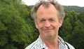

Carl Henrik Johan Carlsson
Fil.dr Uppsala universitet 2004, Redaktör vid Svenskt biografiskt lexikon 1980¿1987, 1991¿.
| Född: | 1954-07-12 Lund, Lunds domkyrko fs, Lunds stad. [1] |
|---|
| Levde: | 1971 S:t Olofsg 12, Uppsala, Uppsala domkyrko fs, Uppsala kn. [1] |
|---|
| Levde: | 1981 Fjärdingen 12:7, S:t Olofsg 12, Uppsala, Uppsala domkyrko fs, Uppsala kn. [2] |
|---|
| Vigsel: | 1990-05-24 Uppsdala, Uppsala domkyrko fs, Uppsala kn. [3] |
|---|
| Levde: | 1991 Luthagen 9:10, Jumkilsg 15, Uppsala, Uppsala domkyrko fs, Uppsla kn. [3] |
|---|
| Skilsmässa: | före 2015 Uppsdala, Uppsala domkyrko fs, Uppsala kn. [4] |
|---|
| Barn: |
|---|
| Simon Carl Oscar Carlsson (1993 - ) |
Noteringar
Pågående forskning
Statlig antisemitism 1921¿1945. Kontinuitet eller diskontinuitet? Finansierat av Riksbankens jubileumsfond, slutredovisat 2013.
Övriga forskningsintressen
Östjudisk invandring och integration, i synnerhet till och i Sverige, 1850¿1920. Antisemitism. Diskriminering. Svensk-judisk historia i allmänhet.
Kort CV
Fil.dr Uppsala universitet 2004. Redaktör vid Svenskt biografiskt lexikon 1980¿1987, 1991¿2009. Forskare vid Hugo Valentin-centrum, Uppsala universitet, 2009¿ . Redaktör vid Riksarkivet, 2012¿ . Koordinator för Forskarnätverket "Judarna i Sverige ¿ en minoritets historia" 2007¿ .
Akademiska priser
Kungliga Vetenskaps-Societetens i Uppsala Benzeliusbelöning 2005.
Uppsala Universitets Geijerspris 2007.
Undervisning
Historia för släktforskare, Historiska institutionen, Uppsala universitet, vt 2009-ht 2011.
Judarnas historia i Sverige, Hugo Valentin-centrum, Uppsala universitet, sedan ht 2011.
Publikationer i urval
Medborgarskap och diskriminering. Östjudar och andra invandrare i Sverige 1860¿1920
Doktorsavhandling. Studia Historica Upsaliensia 215. 377 s. Uppsala universitet. 2004.
”Invandringspolitik, utlänningskontroll och medborgarskap i samband med första världskriget, i Bengt Nilsson (red.), Historielärarnas förenings årsskrift 2014. Stockholm: Historielärarnas förening (2014 kommande).
”När Göteborg var centrum” i Museibladet. Medlemstidning för Judiska Museets Vänförening, 2014:1 (kommande).
“Jewish Transmigrants from Eastern Europe to Sweden 1860¿1914”, i Tobias Brinkmann (ed.), Points of Passage. Jewish Transmigrants from Eastern Europe in Germany, Britain, Scandinavia and other Countries. New York: Berghahn Books (2013).
”Säg det i toner och inte i ord. Pogromparadigmet i svensk-judisk historieskrivning”, i Henrik Edgren (red.), Den breda nationens framväxt 1750¿1920. Festskrift till Torkel Jansson. Uppsala: Historiska institutionen vid Uppsala universitet (2013).
“Inledning” (tillsammans med Lars M Andersson), i Lars M Andersson & Carl Henrik Carlsson (red.), Från sidensjalar till flyktingmottagning. Judarna i Sverige ¿ en minoritets historia. Uppsala: Historiska institutionen vid Uppsala universitet. Opuscula Historica Upsaliensia 50 (2013).
”Vad visste man i Tyskland?”, i Museibladet. Medlemstidning för Judiska Museets Vänförening, 2013:3, s. 13-14.
”En osannolik kärlekshistoria”, i Museibladet. Medlemstidning för Judiska Museets Vänförening, 2013:2, s. 23-24.
”Judarna i Wien”, i Museibladet. Medlemstidning för Judiska Museets Vänförening, 2013:1, s. 20-21.
”Förord”, i Judarna i Sverige från 1774 till 1950-talet av Hugo Valentin. Stockholm: Judiska museet (2013).
”Debatten mellan Åsbrink och Lomfors om Förintelsen, forskningen och fiktionaliseringen”, publicerad på Riksbankens Jubileumsfonds hemsida (2011).
”Raczki: A Dream Trip Fulfilled”, i Landsmen - Quarterly Publication of The Suwalk-Lomza Interest Group For Jewish Genealogists, vol. 20(3-4) (Washington D.C. 2011), s. 3-10.
”Dagen då länsman Löwenstein ilsknade till eller Vad konstituerar en Mosaisk församling”, i Tankar i ”judefrågan”. Nedslag i den svenska antisemitismens historia, ed. Lars M Andersson & Karin Kvist Geverts. Under publicering.
"Judisk invandring från Aaron Isaac till idag", i Helmut Müssener (red), Judarna i Sverige - en minoritets historia. Fyra föreläsningar, s. 17-54. Uppsala 2011.
Storch, Gilel (Hilel), Svenskt biografiskt lexikon, häfte 164 (2010), s. 595-599.
Stolpe, släkt, Svenskt biografiskt lexikon, häfte 164 (2010), s. 562-565.
”Släkten Pagrotsky i Polen, USA och Sverige” , i Släktforskarnas årsbok þ06, s. 229-240, Stockholm 2006.
”Judisk invandring till Sverige från Aaron Isaac och framåt” i Invandringens betydelse för Dalarna och Sverige. Fyra föreläsningar från Släktforskardagarna i Borlänge 2002. Publicerad av Dalarnas Släktforskarförbund 2004.
”Sweden”, i Avotaynu Guide to Jewish Genealogy, edited by Sallyann Amdur Sack and Gary Mokotoff. Avotaynu Inc., Bergenfield, NJ, USA, 2004.
”Norway”, i Avotaynu Guide to Jewish Genealogy, edited by Sallyann Amdur Sack and Gary Mokotoff. Avotaynu Inc., Bergenfield, NJ, USA, 2004.
Recension av ”Hugo Valentin, Judarna i Sverige från 1774 till 1950-talet. Stockholm”: Judiska museet. Natur och Kultur, 2004, i Multiethnica. Meddelande från Centrum för multietnisk forskning, Uppsala universitet Nr 30, Maj 2007, s. 34f.
Recension of Lars Hallberg, ”Källor till invandringens historia i statliga myndigheters arkiv 1840-1990. Skrifter utgivna av Riksarkivet, 17”, i Släkt och Hävd. Tidskrift utgiven av Genealogiska Föreningen 2001:4.
”La Migración de judíos de Suwalki a Suecia”, i Toldot: Revistade Genealogia Judia. Editada por la Asociacion de Genealogia Judia de Argentina, nr. 17, s. 10-11, Buenos Aires, Argentina 2002.
”A Polish Jew, Swedish Clergymen and the Jewish Community - a case study from 1848”, i Jews and christians in dialogue II : identity - tolerance - understanding, s. 107-116, red. Michal Bron, Södertörn academic studies, 5, Huddinge 2001.
”The Migration of Suwalki Jews to Sweden”, in 21st International Conference on Jewish Genealogy. Syllabus., London 2001.
”Adelsohn & Co: metronymika bland judiska släktnamn” i Släkt- och personhistoriska studier tillägnade Pontus Möller den 29 augusti 2001. Släkt och Hävd. Tidskrift utgiven av Genealogiska Föreningen, nr 2-3, 2001, s. 303-304, Stockholm 2001.
”The Suwalki Immigration to Sweden”, i Independent Suwalk & Vicinty Benevolent Association. 95th Anniversay Journal, opag. [3 sidor], New York 2000.
”Släkten Gottfarb från Rajgrod, Polen”, i Släktforskarnas årsbok þ00, s. 307-314 Stockholm 2000.
”Yes, Lobby for Open Access to Archives - But Why Not in the U.S. Too?”, i Avotaynu. The International Review of Jewish Genealogy, vol. XVI, nr. 3, Teaneck, N.J., USA, 2000.
”Zydzi z Polski i innych krajów Europy Wschodniej w Szwecji w latach 1914-1920: Kwestia obywatelstwa.”, i Polska Szwecja 1919-1999, red. Jan Szymanski, s. 35-55, Gdansk, Polen 2000.
”Släkten Felländers ursprung”, i Släktforskarnas årsbok þ98, s. 67-80, Stockholm 1998.
“Jewish Emigration from Eastern Europe to Sweden from the 1850's to World War I. Sources in Swedish Archives/Emigration juive d'Europe de l'Est en Suède à la fin du XIXe siècle, sources dans les Archives Suédoises”, i Proceedings of the 5th International Seminar on Jewish Genealogy, s. 207-214, Paris 1998.
”Svenskt biografiskt lexikon”, i Släktforskarnas årsbok þ98, s. 27-46, Stockholm 1998.
Judisk släktforskning: en kortfattad handledning. Preliminär version 1997 (Manuskript). 21 sidor.
”Hur jag fann mina östjudiska rötter” i Släktforskarnas årsbok þ97, s. 9-34, Stockholm 1997.
Ca 50 artiklar i Svenskt biografiskt lexikon.
8 artiklar 1991-1998 i LANDSMEN. Quarterly Publication of the Suwalk-Lomza Interest Group For Jewish Genealogists.
Redaktörskap
Lars M Andersson & Carl Henrik Carlsson (red.), Från sidensjalar till flyktingmottagning. Judarna i Sverige ¿ en minoritets historia. Uppsala: Historiska institutionen vid Uppsala universitet. Opuscula Historica Upsaliensia 50 (2013).
Carl Henrik Carlsson (red.), Mat och dryck. Smakprov ur arkiven. Riksarkivets årsbok 2013. Stockholm: Riksarkivet (2013).
Personhistoria
| Årtal | Ålder | Händelse |
|---|
| 1954 |
|
Födelse 1954-07-12 Lund, Lunds domkyrko fs, Lunds stad [1] |
| 1960 |
|
Makan Ylva-Carin Marie Gustafsson föds 1960 Uppsala, Uppsala domkyrko fs, Uppsala kn [3] |
| 1971 |
|
Levde 1971 S:t Olofsg 12, Uppsala, Uppsala domkyrko fs, Uppsala kn [1] |
| 1981 |
|
Levde 1981 Fjärdingen 12:7, S:t Olofsg 12, Uppsala, Uppsala domkyrko fs, Uppsala kn [2] |
| 1989 |
35 år |
Fadern Sten Carl Oskar Carlsson dör 1989-08-05 S:t Olofsg 12, Uppsala, Uppsala domkyrko fs, Uppsala kn [5] |
| 1990 |
35 år |
Vigsel Ylva-Carin Marie Gustafsson 1990-05-24 Uppsdala, Uppsala domkyrko fs, Uppsala kn [3] |
| 1991 |
|
Levde Ylva-Carin Marie Gustafsson 1991 Luthagen 9:10, Jumkilsg 15, Uppsala, Uppsala domkyrko fs, Uppsla kn [3] |
| 1993 |
|
Sonen Simon Carl Oscar Carlsson föds 1993 Uppsala, Uppsala domkyrko fs, Uppsala kn [4] |
| 1996 |
41 år |
Modern Kerstin Wallstén Carlsson dör 1996-04-04 S:t Olofsg 12, Uppsala, Uppsala domkyrko fs, Uppsala kn [6] |
| <2015 |
|
Skilsmässa Ylva-Carin Marie Gustafsson före 2015 Uppsdala, Uppsala domkyrko fs, Uppsala kn [4] |
Dokument
Källor
| [1] | Mtl Uppsala län 1971 |
| |
| | |
| [2] | Mtl Uppsala län 1981 |
| |
| | |
| [3] | Mantalslängd 1991, Uppsala län |
| |
| | |
| [4] | https://www.ratsit.se/sok/avancerat/person |
| |
| | |
| [5] | RTB 89 / SPAR 90 |
| |
| | |
| [6] | RTB 96 / SPAR 92f / SPAR 96 |
| |
|
|
2005. Fil.dr, historia, forskare, Uppsala universitet
Koordinator för Forskarnätverket ”Judarna i Sverige ¿ en minoritets historia”
www.valentin.uu.se/om-oss/medarbetare/carl-henrik-carlsson/
|
| |
|
2012-10. Fil.dr, historia, forskare, Uppsala universitet
Koordinator för Forskarnätverket ”Judarna i Sverige ¿ en minoritets historia”
limmud.se/wp-content/uploads/2012/10/CH-CArlsson.jpg
|
| |
|  |
Fil.dr, historia, forskare, Uppsala universitet
Koordinator för Forskarnätverket ”Judarna i Sverige ¿ en minoritets historia”
www.forskning.se/images/200.453bdadd142ffdebb1f11a9d/1387287606358/131016-Carl-Henrik-Carlsson-uurj.jpg
|
| |
|
2014-06-21. Fil.dr, historia, forskare, Uppsala universitet
Koordinator för Forskarnätverket ”Judarna i Sverige ¿ en minoritets historia”
www.facebook.com/carl.h.carlsson.7?fref=ts
|
|
{kind=link}
{kind=link}
{kind=link}
{kind=link}